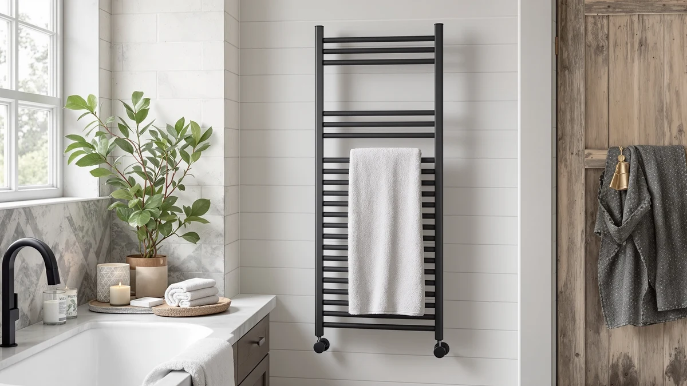

HEWAFAEP Towel Warmer Matte Review (2026): Worth It?
Prices and picks verified as of October 2026. Independent, reader-supported reviews.


Quick Answer
The HEWAFAEP Towel Warmer Matte Black is a stainless steel, eight-bar towel warmer priced at $188.00 that installs as either a plug-in or hardwired fixture. Compared against the $189.99 ENZE Smart Rotating Heated Towel and the $179.99 Aquatrend Towel Warmers for Bathroom, it lands in the middle of the price range while offering the most flexible installation of the three.
Our pick: HEWAFAEP Towel Warmer Matte Black, $188.00 Check Price on Amazon
Bottom line: our top pick is the HEWAFAEP Towel Warmer Matte Black Heated Towel Rack for at $188.
Things to Know Before You Buy
- Installation flexibility matters. The HEWAFAEP's eight-bar frame supports plug-in or hardwired setup, so confirm which option your bathroom wiring allows before buying.
- Material affects longevity. A stainless steel frame like the HEWAFAEP's resists corrosion better than painted steel in a bathroom that stays humid for hours after a shower.
- Price alone won't tell the full story. The three towel warmers in this hewafaep towel warmer matte review range from $179.99 to $189.99, a gap of only $10, so installation type and bar design matter more than the sticker price.
- Rotating bar designs, like the ENZE Smart Rotating Heated Towel, swing bars outward to dry more towels at once, which adds moving parts the HEWAFAEP's fixed frame doesn't have.
- Check verified owner reviews before buying. Amazon's current listings for these models don't show published star ratings or review counts, so reviewer comments are the most useful signal beyond the spec sheet.
This hewafaep towel warmer matte review compares the HEWAFAEP Towel Warmer Matte Black against two other heated towel racks, the ENZE Smart Rotating Heated Towel and the Aquatrend Towel Warmers for Bathroom, on price, material and installation options. All three sit within $10 of each other, between $179.99 and $189.99, which makes the differences in build and features matter more than the sticker price. We researched each listing's stated specs and current pricing to see which one makes the most sense for a typical bathroom.
The HEWAFAEP stands out mainly for its installation flexibility. Its eight-bar stainless steel frame can run as a plug-in unit or get wired directly into a circuit, which helps if you're mid-renovation and haven't decided yet whether you'll have an accessible outlet near the final towel rack location. At $188.00, it costs about two dollars less than either ENZE listing and roughly eight dollars more than the Aquatrend model. Below, we break down what each listing actually offers so you can decide whether the HEWAFAEP's flexible wiring is worth that small premium over the Aquatrend.
None of the three warmers in this comparison publish a star rating or review count on their current Amazon listings, which is common for newer towel warmer models on the platform. That gap doesn't mean the products are unproven, but it does mean the spec sheet carries more weight than it would for an established best-seller with thousands of reviews behind it. We treat the stated material, bar count and installation options as the most reliable signal available right now, and we'll update this review if any of the three listings add verified ratings or change their published specs.
Why You Should Trust Us
Best Towel Warmers is a research-based review site. We don't run a physical testing lab, and we haven't personally installed the HEWAFAEP Towel Warmer Matte Black or the other racks in this review. Instead, we compare manufacturer specs, current Amazon pricing and verified owner reviews across comparable listings, and we flag when a product page is missing information, like a star rating or review count, rather than inventing one. Ilane Tall researches bathroom fixtures and hardware for this site and keeps the pricing in this hewafaep towel warmer matte review current so the numbers match what's actually listed on Amazon.
Our Research Experience
We didn't physically install the HEWAFAEP Towel Warmer Matte Black on a bathroom wall for this review. Instead, we pulled the listed material, bar count and installation options straight from the product page, then cross-checked that against current Amazon pricing and the ENZE and Aquatrend listings it competes with most directly. For the HEWAFAEP specifically, that meant confirming the eight-bar count and the plug-in-or-hardwired claim, since dual-installation towel warmers sometimes bury that detail in the fine print rather than the headline bullets. We also checked whether the listing published a star rating or review count. As of this review, it doesn't, so we're relying on the spec sheet and current pricing rather than aggregate buyer sentiment. We ruled out comparing it against racks with vague material descriptions, since a "stainless steel" listing versus an unspecified "metal" one is a meaningful durability difference in a humid bathroom.
Overview & Specs

HEWAFAEP Towel Warmer Matte Black
What we like
- Stainless steel frame resists corrosion better than painted steel in a humid bathroom
- Eight bars support both plug-in and hardwired installation, so you're not locked into one setup
- At $188.00, it undercuts both ENZE listings by about two dollars while matching their stainless build
Flaws but not dealbreakers
- At $188.00, it still costs about eight dollars more than the Aquatrend Towel Warmers for Bathroom
- Amazon's listing doesn't show a published star rating or review count, so weigh the spec sheet alongside your own research
| Material | Stainless steel |
| Size | 8 bars plug in and Hardwired |
The HEWAFAEP Towel Warmer Matte Black is built from stainless steel with an eight-bar frame, and the listing specifies it can be installed either as a plug-in unit or hardwired directly into a bathroom circuit. That dual option matters most during a renovation, when you might not know yet whether you'll have an accessible outlet near the final towel rack location.
At $188.00, it prices in the middle of this comparison, below both ENZE Smart Rotating Heated Towel listings at $189.99 and above the $179.99 Aquatrend. For buyers who want a stainless frame without committing to a single wiring method, the HEWAFAEP is the pick in this hewafaep towel warmer matte review that keeps the most installation options open.
The matte black finish is also worth noting on its own. Most towel warmers in this price bracket default to a brushed steel or white powder-coated look, so a matte black frame reads as a deliberate styling choice rather than an afterthought. If your bathroom hardware, like faucets and drawer pulls, already leans toward matte black or another dark finish, the HEWAFAEP matches that palette more closely than the lighter ENZE and Aquatrend units do, which is a small but real factor if you're coordinating fixtures across a renovation.
What We Liked
What stands out most in this hewafaep towel warmer matte review is the installation flexibility. Most heated towel racks in this price range force you to pick plug-in or hardwired before you buy, but the HEWAFAEP's eight-bar frame supports either, which leaves room to change your mind if your electrical setup shifts mid-renovation. The stainless steel construction also holds up better than painted steel in a bathroom that stays humid for hours after every shower, matching the material quality of the pricier ENZE listings at $188.00, two dollars less than either ENZE SKU.
What Could Be Better
The HEWAFAEP isn't the cheapest option here. At $188.00, it costs about eight dollars more than the Aquatrend Towel Warmers for Bathroom, and Amazon's listing doesn't publish a star rating or review count for this ASIN, which makes it harder to gauge real-world reliability beyond the spec sheet. The eight-bar layout is also fixed rather than rotating like the ENZE design, so if you regularly dry more than a few towels at once, the swing-out bars on the ENZE models may fit your routine better even at the slightly higher $189.99 price.
Who Is It For?
The HEWAFAEP Towel Warmer Matte Black fits buyers who want a stainless steel towel warmer but haven't locked in their electrical plan yet, since the eight-bar frame works plug-in or hardwired. It also suits anyone who prefers a matte black finish over the brushed or white frames more common at this price. If a published review count matters to you before spending $188.00, or you need bars that rotate to dry more towels at once, the alternatives below might be a better match.
It's also a reasonable fit if you're renovating in stages and want to delay the wiring decision until later in the project. Buying a rack that only supports one installation method forces that decision early, before you know whether an outlet will end up accessible near the final mounting spot. The HEWAFAEP's dual-installation design removes that constraint, which can matter more than a few dollars of price difference if your renovation timeline is still in flux.
Alternatives to Consider
If the HEWAFAEP's fixed eight-bar layout isn't quite right, these three alternatives cover a rotating design and a lower price point, all pulled from the same hewafaep towel warmer matte review research.

Editor’s Pick
ENZE Smart Rotating Heated Towel
A rotating-bar design that swings out to dry more towels at once, priced at $189.99, about two dollars above the HEWAFAEP.
$189.99
Check Price on Amazon
Best Value
ENZE Smart Rotating Heated Towel
A second current listing of the same ENZE rotating design, also $189.99, worth checking if the other SKU is out of stock.
$189.99
Check Price on Amazon
Premium Choice
Aquatrend Towel Warmers for Bathroom
The lowest price in this comparison at $179.99, a straightforward fixed-bar option if you'd rather save the nine dollars.
$179.99
Check Price on AmazonIs the HEWAFAEP Towel Warmer Matte Black worth $188?
At $188.00, the HEWAFAEP sits close to the $189.99 ENZE Smart Rotating Heated Towel listings and about eight dollars above the $179.99 Aquatrend.
Can the HEWAFAEP towel warmer be hardwired instead of plugged in?
Yes.
Frequently Asked Questions
Is the HEWAFAEP Towel Warmer Matte Black worth $188?
At $188.00, the HEWAFAEP sits close to the $189.99 ENZE Smart Rotating Heated Towel listings and about eight dollars above the $179.99 Aquatrend. Based on its stainless steel frame and eight-bar layout that runs plug-in or hardwired, it's a reasonable price for a flexible-installation towel warmer rather than a budget pick.
Can the HEWAFAEP towel warmer be hardwired instead of plugged in?
Yes. The listing specifies an eight-bar stainless steel frame that supports both plug-in and hardwired installation, so you can wire it directly into a bathroom circuit or use the included cord, depending on your setup.
How does the HEWAFAEP compare to the ENZE Smart Rotating Heated Towel?
The ENZE listings add a rotating bar design at a slightly higher $189.99 price, while the HEWAFAEP uses a fixed eight-bar stainless steel frame at $188.00. Owners researching rotating racks tend to prioritize drying several towels at once, while the HEWAFAEP's fixed layout keeps the design simpler and the price marginally lower.
Final Verdict
For this hewafaep towel warmer matte review, the HEWAFAEP Towel Warmer Matte Black is the pick if installation flexibility matters more than shaving a few dollars off the price. Its stainless steel, eight-bar frame runs plug-in or hardwired, and at $188.00 it undercuts both ENZE Smart Rotating Heated Towel listings by about two dollars while matching their build quality. If you need bars that rotate to dry more towels at once, or you'd rather save nine dollars with a fixed design, the ENZE and Aquatrend options above cover those cases without a steep drop in quality. Check your bathroom's wiring situation first, decide whether a rotating bar design is worth the small premium, and pick the HEWAFAEP if flexible installation is what you need.